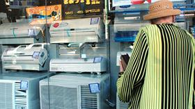

Lanzan un plan de ahorro para acotar los cortes de electricidad
El Gobierno pide usar el aire acondicionado en 24°; sigue vigente el premio por gastar entre 10% y 20% menos que en 2015

Rarezas del consumo energético, las temperaturas, los acondicionadores de aire modernos y la fiebre porteña fin de año. Sobre la base de un cálculo impreciso, el Gobierno llegó a una certeza: si lograra convencer a todos los ciudadanos acalorados de utilizar el split en 24° en lugar de 20° se reduciría sustancialmente la cantidad de cortes de luz que se esperan para los próximos días. Así lo explicó ayer en conferencia de prensa la subsecretaria de Ahorro y Eficiencia Energética, Andrea Heins.
"Si todos ponemos el aire acondicionado a esa temperatura en un día de calor se pueden ahorrar 850 MW de potencia. Esto es más que la potencia de Atucha II, de 745 MW", sostuvo la funcionaria. Esa cantidad de energía representa el consumo de unos 211.000 hogares, por lo que una eventual disminución de la demanda haría que más familias tengan luz en las épocas críticas (el año pasado, por ejemplo, se aplicaron cortes programados de electricidad debido a que el consumo superó en algunas ocasiones la oferta disponible, incluida la importación).
La batalla por el cambio cultural en materia energética comenzó desde la cima del Poder Ejecutivo. Ayer, el presidente Mauricio Macri recordó en Córdoba: "Ahora que viene el calor, usar el aire acondicionado a 24 grados. Esas pequeñas cosas ayudan", insistió. Y un día antes, el ministro de Energía, Juan José Aranguren, cerró su participación en un seminario organizado por la Asociación Empresaria Argentina con la misma consigna. El pedido apunta en especial a la hora de la siesta. Los números muestran que entre las 15 y las 16 se registra el pico de consumo, por lo que también ese período es la mayor amenaza para el suministro de energía, una dificultad que el año pasado condujo a la aplicación de cortes de luz programados.
En las próximas semanas el Gobierno lanzará una campaña en medios de comunicación y redes sociales para favorecer la concientización respecto del uso de la energía con vistas a generar cambios de hábitos. Se extenderá al menos durante todo 2017.
También lanzará una guía de uso eficiente de la energía que será impresa y estará en la Web y en una aplicación para descargar en teléfonos celulares. De manera sencilla, explica qué puede hacer cada usuario para reducir el consumo en cada espacio de su vida, desde la cocción de los alimentos hasta el momento de la ducha.